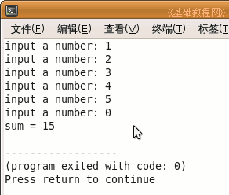

C++ 编程基础教程
作者：TeliuTe 来源：基础教程网
我们来看另一种循环，它跟 For 循环区别在于，For 循环一般知道循环次数，在第一行里头就指明了，而while循环一般不知道循环次数，下面我们来看一个练习；
1、启动 Geany
1）点菜单“应用程序－编程－Geany”启动 Geany ，新建一个 c++ 源程序；
2）点菜单“文件－另存为”命令，以“while”为文件名，保存文件到自己的文件夹；
2、输入程序代码
1）输入一个求和的程序，当输入为 0 时结束；
|
#include <iostream> using namespace std; int main(int argc, char** argv) { int a = 0; int sum = 0; cout << "input a number: "; cin >> a; while (a != 0) { sum = sum +a; cout << "input a number: "; cin >> a; } cout << "sum = " << sum; return 0; } |
2）第一段是定义两个变量，存放输入和总和，
第二段是先提示输入一个值，
第三段是循环，括号里面先判断一下 a 的值，不是 0 就求和，然后继续输入、判断、求和，直到不满足条件退出循环，
下面一段是输出最终求和的结果；
3）保存、编译、生成、运行，从键盘上不断输入数，最后输一个 0，得到求和的结果；

3）while 和 for 循环的区别是，while 循环要先判断条件，满足了再循环，一般用在读取文件中，读到文件结尾了就退出；
本节学习了 while 循环的基本操作，如果你成功地完成了练习，请继续学习下一课内容；
本教程由86团学校TeliuTe制作|著作权所有
基础教程网：http://teliute.org/
美丽的校园……
转载和引用本站内容，请保留版权信息和本站链接。